Materials management
Lendvai Tamás
B. Forgó eszközök I. Készletek
Materials Management. Az anyaggazdálkodás közvetlenül az SAP menüben lévő a Logisztika (Logistics) mappában található.
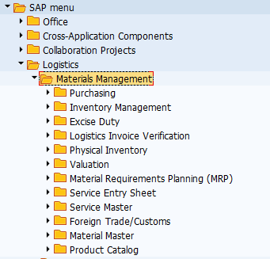
Az anyaggazdálkodás (Materials Management) legfontosabb feladata 2-es számlaosztályba tartozó anyag- és árukészlet részletes nyilvántartása. A modul elsősorban az alábbi mérlegelemeket és számlaosztályokat fedi le.

Másodsorban azonban lehetőség van 5-ös számlaosztályba tartozó, azonnali felhasználású, tehát nem továbbszámlázott szolgáltatások nyilvántartására.
Röviden az egyes részmodulokról.
Purchasing. A készlet beszerzését, a készletek beáramlását segíti a beszerzési modul (Purchasing), amely a beszerzési igénylés (Purchase Requisition), a beszerzési rendelés (Purchase Order), a szerződés (Outline Agreement), az árajánlat (RFQ/Quotation), valamint a törzsadat (Master Data) részmodult tartalmazza. A beszerzési modul üzemeltetése elsősorban a beszerzési osztályok és csoportok feladatkörébe tartozik. A készletek, illetve a tovább számlázott szolgáltatások mellett lehetőség van 5-ös számlaosztályra beszerezni azonnali felhasználású szolgáltatásokat, illetve 1-es számlaosztályra beszerezni tárgyi eszközöket.

Inventory Management. A készlet mozgatását, az anyagáramlás alapszintű szabályozását a készletmenedzsment modul látja el. Legfontosabb területei az anyagmozgatás (Goods Movement), az anyagbizonylatok (Material Document) és az anyagfoglalások (Reservation). A modul üzemeltetéséhez elsősorban a készletkezelési feladatok ellátó csoportoknak van jogosultsága.

Logistics Invoice Verification. A beszerzési folyamatok, különösen a készletrendelések könyvelését a LIV modul látja el. Az elnevezése arra utal, hogy a modulban lehet könyvelni a logisztikai előzményekkel rendelkező szállítói számlákat. A modulban a Document Entry mappában van lehetőség a számlák iktatására és könyvelésére, az Automatic Settlement mappa a költségek (pl.: szállítási, rakodási, stb.) szétosztást támogatja, a GR/IR Account Maintance mappában az áru/számla beérkeztetést időben elhatároló főkönyvi számla menedzselését segíti.
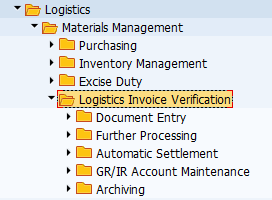
Physical Inventory modul az anyag- és árukészlet leltározását segíti. Ebben a modulban hozhatók létre leltárbizonylatok (Physical Inventory Document), végezhetők el készletszámítások (Inventory Count) és az eltérések kezelése (Difference).

Valuation modul a készlet értékelésére vonatkozik, és segédkönyveket használ. A Change in Material Price követi az anyagok értékben bekövetkezett változásokat. A Balance Sheet Valuation a mérleg / vagyonelemek szerinti értékelést számítja ki. Az ezen belül lévő mappák különböző számítási lehetőségeket tartalmaznak: legalacsonyabb költség meghatározása (Determination of Lowest Value), LIFO szerinti és FIFO szerinti értékelés, valamint ezek eredményei (Results). További értékelési lehetőséget tartalmaz a Balance Sheet Valuation with Material Ledger, és a Actual Costing/Material Ledger.
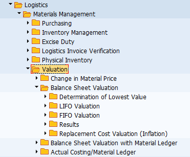
Service Master modullban a jellemzően 5-ös számlaosztályra, költségnemre és költséghelyre könyvelendő szolgáltatásokat lehet nyilvántartani.
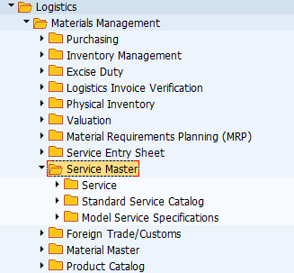
A szolgáltatás (Service) mappában lehet felvinni, megtekinteni és módosítani a szolgáltatások törzsadatait. A Standard Service Catalog-ban a szolgáltatásokból lehet katalógusokat, nyilvántartásokat létrehozni.
Material Master modulban lehet létrehozni olyan anyagokat, árukat és közvetített szolgáltatásokat, amelyek II/1 mérleg osztályba, illetve a 21-28-as számlacsoportba tartoznak.

Material Master mappában lehet felvinni, módosítani, megtekinteni anyagokat, árukat, továbbszámlázott szolgáltatásokat. A Profile mappában lehet létrehozn az automata beszerzési igények összeállítása miatt is lényeges MRP és Forecast Profile-okat (ezeket később az anyagokhoz lehet rendelni. A Batch mappában a sarsz számok beállítására van lehetőség. A Special Stock mappában konszignációs szállítói készletekkel kapcsolatos tranzakciók érhetők el.
Material Master
1. General Overview
Mint korábban írtuk a Forgóeszköz \ Készletek mérlegosztályba, illetve a 2-es számlaosztályba tartozó anyag- és árukészletek analitikus nyilvántartására az Anyaggazdálkodási modulban (Materials Management) van lehetőség. A törzsadatokat a Material-ban tudjuk felvinni, megtekinteni és módosítani.
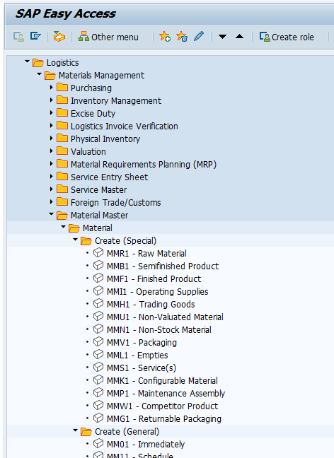
A modul felépítése:
Az SAP ERP rendszerben előre megadott típusú anyagok értékeit tudjuk a Create (Special) és a Create (Genral) mappában felvinni. Az egyes anyagtípusok közvetve összevannak kötve a főkönyvi számlákkal. Ezek az anyagtípusok igazodnak a nemzetközi számviteli szabványok (IAS) alapján készült standard számlatükrökhöz (IFRS, US GAAP), valamint a standard magyar számlatükörhöz is. Az egyes típusok lefordításától eltekintünk, ugyanakkor az említett számlatükröket bemutatjuk.
IFRS
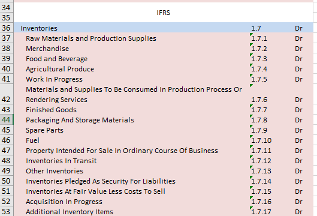
US GAAP
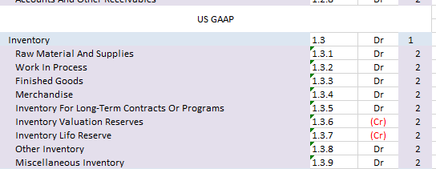
Magyar standard számlatükör
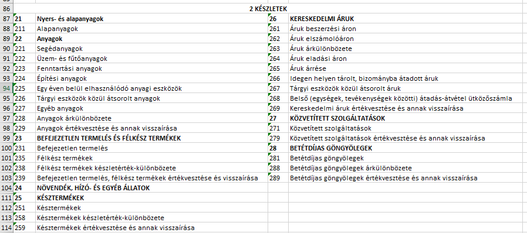
A korábban felvitt készletbe tartozó anyagokat egyenként módosítani MM02-vel, egyedileg megtekinteni MM03-al, csoportosan módosítani és megtekinteni MM17-el tudunk. A már rögzített anyagok típusát MMAM-el tudjuk megváltoztatni. Minden változást a Display Changes mappában tudjuk figyelemmel kísérni. Ezek részletes használatáról később lesz szó.
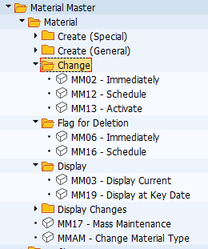
A Profil (Profile) mappában adhatunk meg különböző anyagigény-tervezési (MRP) és anyagigény-előrejelzési profilt. Mindkettőre az anyagbeszerzés automatizálásáért van szükség. Mindkettő esetében arról van szó, hogy előre meghatározunk szabályrendszereket, amelyeket később, az anyag törzsadatainak űrlapjain betudunk tölteni. Ennek lényege az, hogy már elkészült sablon jellegű standard szabályokat vegyünk át, és ne a törzsadatok létrehozása során tervezzük meg. Ezzel jelentősen csökkenthető a hiba lehetőségét.
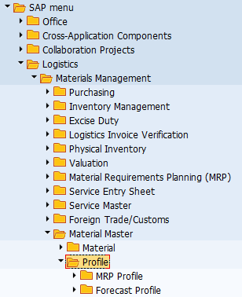
Sarzs számozást a Batch mappában tudunk létrehozni.
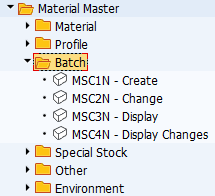
Részletesebben a Batch-ről:
https://www.symbolenterprise.hu/modul/beszerzesi-azonosito-sarzs/ (2021. 02. 04)
https://sioexcise.hu/aas_szoveg/file/452_lot_kod.pdf (2021. 02. 04)
A szállító konszignációs készlete a különleges készletállomány (Special Stock) mappában érhető el.
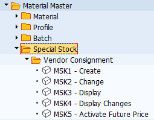
A konszignációs készletekkel kapcsolatban lásd:
Oláh J. & Vad V. A konszignációs készletek jellemzői az ellátási láncban. Vezetéstudomány. (15)8. 67-76. pp. https://core.ac.uk/download/pdf/161069385.pdf (2021. január 20.)
2. Alapanyag (Raw Materials)
Az alapanyag felvitelével létrehozunk egy logikai objektumot, amelyhez majd kapcsolódni fognak a szállítóktól beszerzett konkrét, fizikai termékek mennyiségben és értékben is. Ahhoz azonban, hogy a készletünk adatbázisában tárolni tudjuk a fizikai készletek valós adatait, elsőként a rekordokat kell felvinnünk. Másképpen megfogalmazza, ahhoz, hogy pl.: egy alapanyagra (pl.: almát, lisztet, cukrot, krumplit, tejet, dohányt, papírt) tudjunk kötni szerződést, megállapodást, megtudjuk rendelni, nyilván tudjuk tartani, áttudjuk adni a termelésnek (átalakításra), el tudjuk helyezni raktárházakban, üzemekben stb. elsőként az őt leíró logikai rekordot kell létrehoznunk. Ennek érdekében készítsük el egy tetszőleges alapanyag logikai rekordját.
Alapanyagok felvitele (központilag):
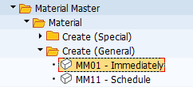
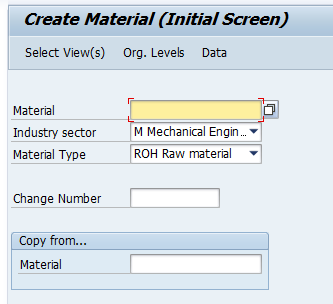
Anyag (Material) cikkszáma, rövid megnevezése. Két lehetőségünk van. Vagy megadunk egy maximum 18 karakterből álló alfanumerikus kódot (megnevezést), vagy üresen hagyjuk és a rendszer az anyagtípushoz kapcsolódó alapértelmezett számintervallum alapján automatában legenerálja.
Iparág (Industry sector). Az alapanyaghoz tartozó releváns iparág. Lényege abban áll, hogy a rendszerbeállítástól függően meghatározhatja, a későbbi űrlapok felépítését, az elérhető mezők körét.
Material Type. Az anyag típusa megegyezik szinte minden esetben a főkönyvben szereplő megnevezésekkel (alapanyag, segédanyag, csomagolóanyag, stb.). Jelentősége számos más tényező mellett abban van, hogy a rendszerbeállítás hatására az anyagtípusokhoz kapcsolódnak a kiválasztható űrlapok köre, valamint a megadható főkönyvi számlák is.
Amennyiben anyagot egy már elkészült anyagról hozunk létre újat, akkor válasszuk a Copy from-ot, és adjuk meg a cikkszámot.
Ezt követően kattintsunk a Select Views-ra, amely listaként sorolja fel az anyagtípushoz tartozó lehetséges űrlapokat. Azt, hogy melyik űrlapok tartozhatnak egy adott anyagtípushoz a rendszermenedzserek határozzák meg a háttérbeállításokban. Általánosságban elmondható, hogy az elérhető űrlapok köre anyagtípusonként eltér (pl.: az alapanyag esetében nem lesz elérhető az eladási űrlap, mivel az alapanyagokat nem értékesítési céllal vesszük meg, hasonlóan a késztermék esetében nem lesz beszerzési űrlap, mivel a késztermékeket magunk állítjuk el). Az alapanyag (ROH RAW Material) esetében a gyári beállításokkal az alábbi űrlapok érhetők el.
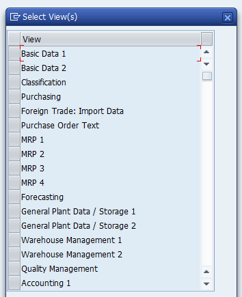
Az űrlapok kiválasztása, majd mezőkészleteinek kitöltése szükséges lesz később az egyes részmodulok üzemeltetéséhez. Pl.: beszerzési folyamatokat nem tudunk végezni, ha az anyagnak nincsen Purchasing űrlapja, érkeztetést nem tudunk végezni, ha nincsen megadva Plant / Storage Location / Warehouse Mgmt űrlap, könyvelést nem tudunk végezni, ha nincsen megadva az Accounting 1 & 2 űrlap, értékesítést, ha nincsen Sales űrlap. Az alábbi ábrán próbáljuk szemléltetni a szerepüket:
https://tekslate.com/sap-mm-material-master-data (2021. 02. 04.)
https://ganeshsapscm.files.wordpress.com/2015/07/mm-views.png?w=685 (2021. 02. 04.)
{kind=link}
Az alapadatok 1, alapadatok 2 (Basic Data 1 & Basic Data 2) az alapértékek (anyagcsoport, mértékegység, súly, kiterjedés, alapértelmezett felhasználási hely, stb.) megadását teszi lehetővé. A csoportosítás (Classification) ezzel szemben az adott anyag különböző variánsait tárolja el csoportonként. Ennek előnye, hogy ebben az esetben nem kell variánsok szerint újra és újra külön anyagokat felvinni, hanem elegendő egyet (vagy néhányat) és annak a variánsait megadni. A fenti példánál maradva felviszünk alapanyagként a tejsavó fehérjét, és megadunk különböző variánsait csoportosítva (izolátum, koncentrátum, laktózmentes izolátum, natív előállítású izolátum, stb.), ezzel mentesülhetünk az önálló anyagokként történő felvitelüktől. Beszerzés (Purchasing) űrlap esetében a beszerzéssel kapcsolatos alapértelmezett (később módosítható) értékeket tudjuk megadni. Ezeket gyakorlatilag valamennyi beszerzési részmodul felhasználja kiindulásképpen. A megrendelési szöveg (Purchase Order Text) a szállítónak eljuttatandó alapértelmezett beszerzési szöveget tárolja. A külkereskedelemhez szükséges alapértékeket a Foreign Trade űrlapon tartjuk nyilván. Ez az űrlap az SAP külkereskedelmi (FT) alkalmazás-összetevőjének szállítói, beszerzési információk, anyagok és vevői törzsrekordok használatához releváns adatok részletes tárolását teszi lehetővé. A rendszer automatizált külkereskedelmi feldolgozása a teljes törzsadatoktól függ. Forrás: https://sapbrainsonline.com/mm-tutorial/foreign-trade-data-in-master-records-sap-mm.html (2021. 02. 04.) A számviteli alapértelmezett értékeket (értékelési osztály, főkönyvi számla, árak) a könyvelési Accounting 1 & Accounting 2 űrlap tartalmazza. Az MRP: Material Requirement Planning űrlapon az anyagigénytervezés beállításaihoz szükséges értékeket tudjuk vezetni. Az anyag alapértelmezett üzemi adatait a General Plant Data 1 / Storage Location & General Plant Data 2 / Storage Location űrlapon lehet megadni.
Miután kiválasztottuk a szükséges űrlapokat, az adott alapanyagot el kell helyezni a szervezeti környezetben.
Szervezeti környezet (Organizational Levels)
A kiválasztott űrlapok alapján és függvényében meg kell adni, hogy az alapanyagot melyik szervezeti egységben, az alapanyag esetében üzemben (Plant), melyik tárolóhelységben (Storage Location) és melyik raktárházban (Warehouse No.) szeretnénk logikailag, illetve fizikailag elhelyezni. Megadhatunk standard, előre definiált MRP profilokat is. A szervezeti környezet objektumai alapértékekként töltődnek be az egyes űrlapokhoz. Órai keretek között használjuk az alábbi értékeket.
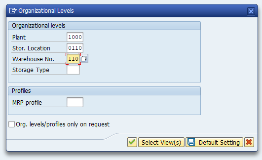
Alapadatok 1. (Basic Data 1.)
Általános adatok (General data)
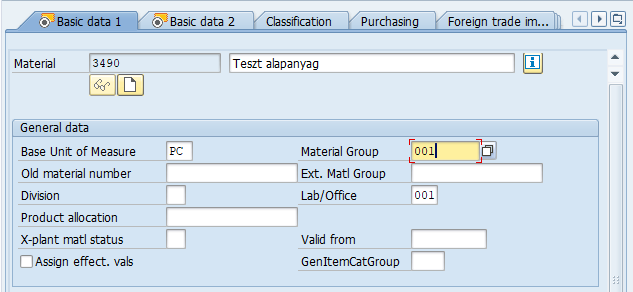
Anyag nyilvántartási mértékegysége (Base Unit of Measure). A készletbe tartozó alapanyag alapértelmezett nyilvántartási mértékegysége (lehet pl.: darab, kg, köbméter). A mértékegység szerepe az, hogy minden attól eltérő mértékegységben megadott értéket erre az alapértelmezett mértékegységre fog konvertálni a rendszer (pl.: ha a szállító más mértékegységben szállítja az anyagot).
Divízió (Division). A divízió megadása az anyagok, termékek, szolgáltatások csoportosítására alkalmasak az eladás és értékesítés tekintetében, ez elsősorban nem az alapanyag, hanem az értékesítendő termékek esetén releváns. A rendszer divíziókat használ az értékesítési területek és üzletágak meghatározásához az egyes anyagok esetében.
X Plant matl status (Cross-plant material status, valid from): az adott anyaghoz lehet megadni különböző blokkolási státuszokat (anyagmozgatáshoz), illetve ennek a kezdő dátumát.
Anyagcsoport (Material Group). az anyagokat anyagcsoportba érdemes sorolni. Anyagcsoport segítségével a későbbiekben könnyen lehet keresni, kimutatni, riportálni és összegezni a csoportban szereplő anyagokat. Az anyagcsoport és az anyagtípus között nincsen kapcsolat. az órai munka során jelentősége lesz az anyagcsoportnak a lekérdezéske összeállításának szempontjából.
Laboratórium / Iroda. Az anyagot felhasználó szervezeti egységet lehet megadni.
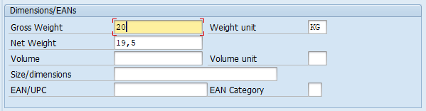
A bruottó és nettó súly (Gross Weight, Net Weight) értékének megadása a raktárházakmenedzselés (Warehouse Mgmt) modulban megadott tárolókapacitás miatt lényeges.
A térfogat (Volume, Volume unit) az üzemi tárolás és szállítás tekintetében releváns
Méret / dimenziók (Size / dimensions) ennek csak tájékoztató szerepe van.
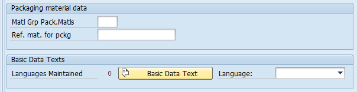
Amennyiben nem alapanyagot, hanem értékesítendő terméket viszünk fel, akkor célszerű megadni a csomagolóanyag referenciaszámát is.
Osztályozási űrlap
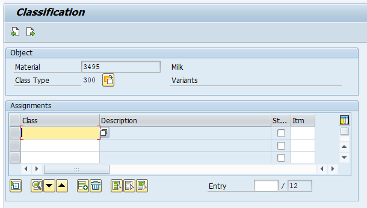
Az űrlap lehetővé teszi, hogy egy adott alapanyagot további osztályokra és variánsokra lehessen bontani. Az eljárás előnye, hogy a Tej példánál maradva létre tudunk hozni csoportokat aszerint, hogy a tej, mint alapanyag ökológiai, biológiai, nagyüzemi, vagy szabadtartású tehenektől, illetve tejgazdaságokból származik. Ennek lényege abban van, hogy egy-egy késztermékhez különböző típusú tejre van szükség. Azonban nem kell négy féle alapanyagot felvinni, ehelyett elegendő egy általánosat létrehozni, és azt megbontani variánsok / típusok szerint.
Beszerzési űrlap (Purchase)
A beszerzési űrlapon szereplő értékek olyan alapértelmezett (default) információk, amelyeket a beszerzési folyamatok tranzakciói (más űrlapok) átfognak venni (azokban természetesen lehet módosítani).
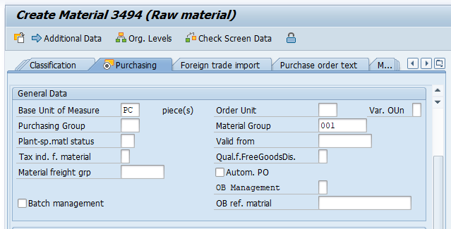
Az alapvető mértékegység (Base Unit of Measure) és a rendelés mértékegysége (Order Unit) mellett megadhatunk olyan beszerzési csoportot (Purchasing Group), amely az alapanyag operatív beszerzéséért felelős. Amennyiben az alapmértékegységet módosítjuk, úgy a Basic Data 1 űrlapon is módosulni fog. Az anyagcsoport értékét a Basic Data 1 űrlapról másolja át a rendszer, ha itt módosítjuk, ott is módosulni fog.
Az űrlapon lévő egyik igen lényeges kapcsoló az automatikus beszerzési rendelés (Automate Purchase Order), ha ezt aktiváljuk, akkor a beszerzési igényekből automatizáltan tudunk megrendeléseket generálni.
Az anyagfuvarozási csoport (Material freight group) az anyagok csoportosítására használják, annak érdekében, hogy azokat árufuvarozási kód és osztály szerint sorolhassák be. A fuvarozási kódokat és az árufuvarozási kódkészlet osztályait az anyagfuvarozási csoport határozza meg. Az árufuvarozási kódkészlet a fuvardíjak meghatározására és a szervizügynökökkel való kommunikációra szolgál.
Szintén lényeges mező a sarzsszám (Batch management) aktiválása. Lásd ennek részletes leírását: https://erpcsere.hu/munka_adagszamokkal/ (2021. 02. 04.)
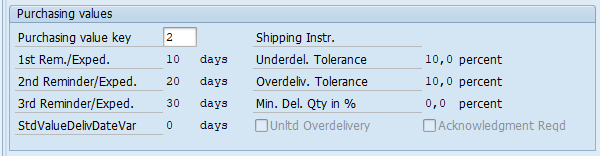
A beszerzési értékkulcs meghatározza:
Szállítókkal szemben megfogalmazott emlékeztetők, felszólítások (1st Rem./Exped. – 3rd Rem./Exped.) napokban kifejezve, arra az esetre, ha az üzleti partner nem szállítja le a a szerződés alapján összeállított és elküldött megrendelés szerinti árut.
Alulszállítási határérték (Underdelivery Tolerance Limit) az százalékos érték (a rendelési mennyiség alapján), ameddig a leszállított mennyiséget elfogadják. Pl.: a rendelési mennyiség 70%-a alatt nem veszem át a szállított mennyiséget, rész szállítást nem vételezek be.
Túlszállítási határérték (Overdelivery Tolerance Limit) az százalékos érték (a rendelési mennyiség alapján), ameddig a leszállított mennyiséget elfogadják. Pl.: a rendelési mennyiség 120%-a feletti árut mennyiséget nem veszem át.
Korlátlan (Indicator: Unlimited Overdelivery Allowed) eben az esetben bármilyen arányú túlszállítás elfogadható.
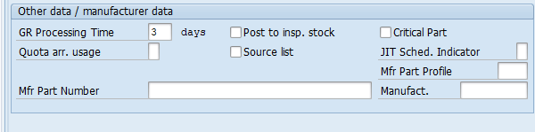
GR Processing Time (Good Receipt Processing Time): az anyagérkeztetés alapértelmezett ideje napban kifejezve. Az ellenőrzéshez szükséges anyag beérkezése és a raktárba helyezés után szükséges munkanapok száma.
Quota arrangement usage: Az itt megadott bejegyzés szabályozza, hogy a teljes rendelési mennyiség hogyan kerül kiszámításra a kvótarendszerben, és ezáltal az anyag melyik ellátási forrása kerül meghatározásra egy adott időpontban. Kvótaelrendezést adható meg a következő mezőkombinációkhoz:
megrendelések: a már megrendelt anyag mennyiségét a kvótarendszer tartalmazza.
beszerzési igények: az anyag beszerzési igénylésében kért teljes mennyiséget a kvótarendszer tartalmazza.
ütemezési megállapodás: az anyag szállítási ütemtervében szereplő teljes mennyiséget a kvótarendszer tartalmazza.
tervezett megrendelések: az anyag tervezett mennyiségben tervezett teljes mennyiségét a kvótarendszer tartalmazza.
anyagtervezés (MRP): a kvótaelrendezési mechanizmust az anyagtervezésben is használják; vagyis az anyagtervezéssel létrehozott tervezett megrendeléseket és beszerzési igényeket a kvótarendszer tartalmazza.
gyártási megrendelések Ennek az anyagnak az összes gyártási megrendelésének teljes mennyiségét a kvótarendszer tartalmazza.
Source list requirement: meghatározza, hogy a forráslistát fenn kell tartani egy bizonyos üzem külső beszerzése esetén. Aktiválás esetén az ellátási forrást meg kell adni a forráslistában, mielőtt vételi megbízást lehet létrehozni.
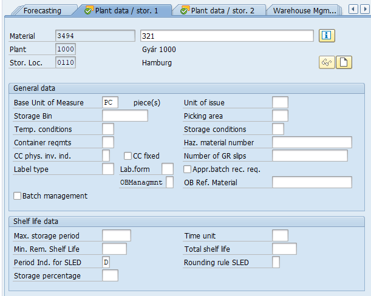
Az üzemi / tárolási adatok 1-ben lehet megadni a tárolás pontos helyét (Storage Bin és Picking Area), a tárolási hőmérsékletet (Temp. conditions), a konténer tulajdonságát (Container reqmts), a feliratozás típusát (Label type), az anyag kiadásának mértékegységét (ha ez eltérne az alapmértékegységtől), a tárolási feltételeket (Storage conditions), a veszélyességi besorolást (Haz. material number), valamint a tárolási időt (Shelf life data).
A Storage Bin-t az alábbi kép szemlélteti:
https://www.wisdomjobs.com/e-university/sap-wm-tutorial-244/storage-section-7706.html (2021. 02. 04.)
A Picking Area-t pedig az alábbi:
https://boxes.curtec.com/en/customer-stories/internal-logistics/katoen-natie (2021. 02. 04.)
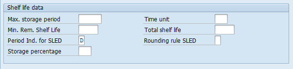
A Shelf Life data a tárolási időt értékeit tartalmazza. Max. storage period = a maximális tárolási idő.
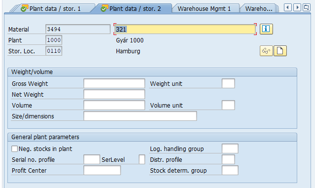
A méret és súly adatokat a Basic Data 1 űrlapról veszi át a program. A számunka léyeges mezőt az alapértelmezet Pénzügyi Központ megadása (Profit Center) jelenti. A beszerzési folyamatokban erre a pénzügyi központra fogja a program kontírozni az alapanyagot.
purchase
Lendvai Tamás
Beszerzési modul (Purchase)
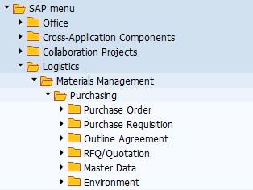
A modulban található szerződések (Outline Agreement), árajánlatok (RFQ), beszerzési igények (Purchase Requisition) és rendelések (Purchase Order) elsősorban a 2-es számlaosztályba tartozó anyag- és árukészletbe sorolható vagyonelemekre vonatkoznak. Emellett lehetőség van 5-ös számlaosztályra is beszerezni, illetve költségként elszámolni szolgáltatásokat és anyagokat, valamint az 1-es számlaosztállyal kapcsolatban tárgyi eszközöket rendelni.
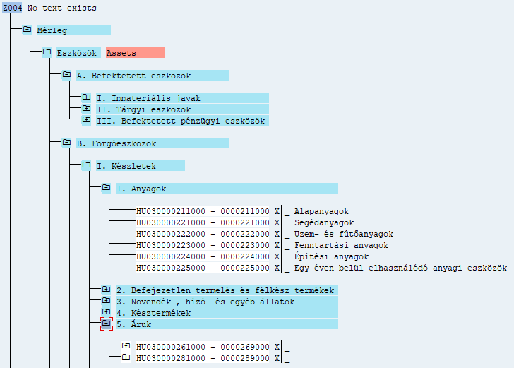
A tranzakciók használatának bemutatását megelőzően az alábbiakban a közös jellemzőket tekintjük át.
Beszerzési környezet
A beszerzési szervezet (Purchase Organization) szervezeti egységként felelős az anyagok- és szolgáltatások biztosításáért az egyes üzemek (Plant) részére. Tevékenysége során elsősorban stratégiai szempontokat, és hosszú időtávot vesz alapul.
Működése során kiválasztja és értékeli a szállítókat, megállapodásokban és szerződésekben rögzíti az árképzés konstrukcióját és a szállítási feltételeket. A beszerzési szervezet tevékenysége mindenekelőtt a gyártási folyamatok input oldalának, különösen az anyag- és árukészletek biztosítására terjed ki, de emellett a tárgyi eszközök és a szolgáltatások beszerzésében is meghatározó szerepe van. A szervezeti elhelyezkedés és hatáskör tekintetében meghatározó kérdés, hogy a beszerzési szervezet centralizált, és alatta helyezkedik el egy, vagy több vállalat (Company Code), vagy decentralizált és a vállalat alatt van(nak) a beszerzési szervezet(ek). Lehetőség van megadni üzemek szintjén definiált beszerzési szervezeteket is. Ebben az esetben adott beszerzési szervezethez adott üzem fog alapértelmezettként kapcsolódni.
https://i0.wp.com/www.erpdb.info/wp-content/uploads/2014/04/041814_2150_ManagingPur1.jpg?resize=576%2C233 (2021. 02. 04.)
{kind=link}
Beszerési szervezet (Purchase Organization) és az üzem (Plant) viszonya. A beszerzési szervezet az adott üzemekben jelentkező igénylések alapján az adott üzem részére végez beszerzési tevékenységet. SAP-ban egy beszerzési szervezethez több üzem is tartozhat, ugyanakkor egy-egy üzem esetében megadhatunk alapértelmezett beszerzési szervezetet. Ebben az esetben a kijelölt beszerzési szervezet felelősség- és jogkörébe fog tartozni az üzem ellátása. Az alábbi ábra a beszerzési szervezet és az üzem kapcsolatát szemlélteti.
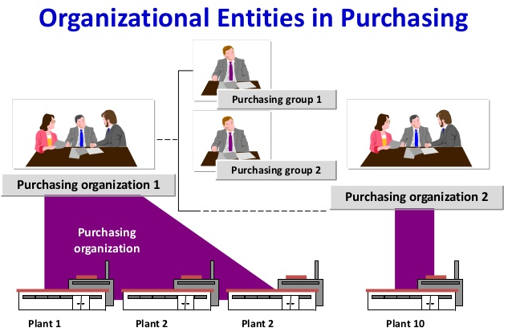
https://slideplayer.com/slide/12701168/76/images/5/Organizational+Entities+in+Purchasing.jpg (2021. 02. 04.)
{kind=link}
Beszerzési csoport (Purchase Group) nem része a szervezeti hierarchiának, nem tartozik egyetlen szervezeti egységhez sem közvetlenül. A beszerzési szervezettől eltérően operatív feladatokat lát, az anyagok, vagy anyagcsoportok mindennapi beszerzésében vesz részt, és ennek részeként kapcsolatot tart a szállítókkal. A beszerzési csoportot a mindennapi beszerzési tevékenységért felelős alkalmazottak alkotják.
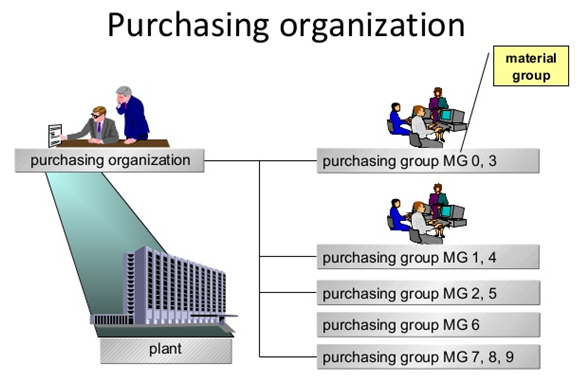
https://image.slidesharecdn.com/introductiontosapr3mm-140118122254-phpapp01/95/introduction-to-sap-r3-mm-13-638.jpg?cb=1390047886 (2021. 02. 04.)
{kind=link}
Üzem (Plant). A vállalat tevékenységeit konkrét telephelyen működő üzemek látják el, a legfontosabb jellemzője a fizikai, geográfiai elhelyezkedés. Az üzemek végezhetnek gyártást, szolgáltatást, vagy egyéb tevékenységet. Lehetnek pl.: egyetemi karok, vagy tanszékek is, tehát nem a funkciójuk a meghatározó. Minden esetben székhelyként, vagy telephelyként vannak bejegyezve, és minden esetben a vállalat fizikai működési szintjének tekinthetők. Az üzemekben mennek végbe a konkrét vállalati tevékenységek (termelés, raktározás, megrendelés, anyag- és eszközgazdálkodás, értékesítés). A készletmenedzsment tekintetében az üzem a legmagasabb olyan független fizikai egység, amely áru- és anyagkészleteket tárol.
A raktárhelyek (Storage Locations) az üzemek alatt helyezkednek a szervezeti hierarchiában.
Lényeges, hogy az üzem és a raktárhely a készlet-, illetve leltárgazdálkodás (Inventory Managment) szintje, az alatt helyezkedik el a fizikai raktárgazdálkodás. A beszerzendő készletek, illetve eszközök mindkettőben megjelennek, azonban a készletgazdálkodás elsősorban a pénzügyi számvitel modul tekintetében meghatározó.
A beszerzési folyamatok célja az üzemekben található gyártási / szolgáltatási egységek kiszolgálása.
Beszerezhető tételek csoportja
A beszerzési környezet alapszintű bemutatását követően tekintsük át, hogy a beszerzési szervezet, illetve beszerzési csoportok milyen jellegű tételeket (anyagokat, árukat, szolgáltatásokat) tudnak beszerezni egy standard, nem fejlesztett SAP rendszerben. Megállapítható, hogy szinte valamennyi beszerzési bizonylat (szerződés, megállapodás, igénylés, rendelés) képes tárolni és menedzselni standard, konszignációs, alvállalkozói (bérmunka) és szolgáltatás típusú tételeket.
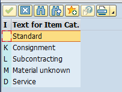
Standard: anyag, áru, vagy továbbszámlázott szolgáltatás beszerzése a szállítótól (a szállító késztermékét, vagy a tovább számlázandó szolgáltatását vásároljuk meg).
Consignment: a konszignációs készletre vonatkozó igénylés során a szállító által leszállított áru egészen addig a szállító tulajdonában marad, amíg nem adjuk ki a termelésre. Gazdasági esemény az anyag termelésbe történő kiadásával történik, ebben az időpontban kell a szállítói számlát is lekönyvelni. A konszignációs készlet a „beszállítók által vezérelt készletek (VMI Vendor Management Invantory) típusába tartozik." A konszignációs készletek esetében a vevő, tehát ebben az esetben mi „csak a felhasznált mennyiség után fizet. … A konszignációs készletek olyan készletek, melyeket a beszállító a vevői megrendelések alapján a vevő rendelkezésére bocsát, de egy későbbi időpontban történik meg a fizetés és a beszállított ám tulajdonjogának az átadás. A vevő csak a felhasznált, a gyártásnak átadott mennyiségeket fizeti ki a beszállító részére." Oláh J. & Vad V. A konszignációs készletek jellemzői az ellátási láncban. Vezetéstudomány. (15)8. 67-76. pp. https://core.ac.uk/download/pdf/161069385.pdf (2021. január 20.)
Alvállalkozói szerződés, bérmunka (Subcontracting) esetében a vállalat a gyártási folyamatának egy részét alvállalkozónak szervezi ki. Pl.: dobozokat adunk át egy vállalatnak, amelyre matricákat / feliaratok nyomtatni, majd a matricával ellátott dobozokat visszajuttatják a vállalatunknak. Az alvállalkozó díjat számol fel a cégnél dobozonként nyújtott szolgáltatásokért.
https://4.bp.blogspot.com/-Y5jV2qi2piw/WT-5iUmWfiI/AAAAAAAAFEY/_SgHDJ7kmXgvxRZpBUGJ4_Yuv98j2ohOACLcB/s1600/Sub%2BCon%2BPic.jpg (2021. 02. 04.)
{kind=link}
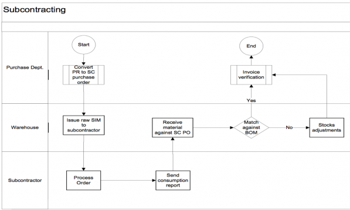
https://erproof.com/wp-content/uploads/2017/01/word-image-244.png (2021. 02. 04.)
{kind=link}
Harmadik fél (Third Party) esetén a vevői rendelések alapján készülnek a beszerzési igények. A rendelési igény alapján készült beszerzési igények, illetve megrendelések egy harmadik a szállítónak kerülnek átadásra, azzal a feltétellel, hogy a szállító nem nekünk szállítja le az árut, hanem vevőnek és ezt követően számlázik a vállalatunknak. Tehát arról van szó, hogy a harmadik fél rendelése alapján megrendelést adunk le egy szállítónak áru szállítására vagy szolgáltatás nyújtására, a harmadik fél (vevőnk) részére. Tehát nem a saját vállalatunk szállítja le a szállítótól átvett anyagot, hanem a megrendelést továbbítjuk a szállítónak, aki ezt követően közvetlenül elküldi az anyagot az ügyfélnek, és számlázik Önnek.

https://3.bp.blogspot.com/-NFAuVrPsFFk/VveLGuHpglI/AAAAAAAAACU/mq5qr88T0Nc-nee9kJvErJrCHdoHhBbDg/s1600/TPT%2B3.png (2021. 02. 04.)
{kind=link}
{kind=link}
https://help.sap.com/doc/PRODUCTION/78e0627c34ef43879d72718e21ea517b/6.18.13/en-US/loio4696b953495bb44ce10000000a174cb4_LowRes.png (2021. 02. 04.)
A folyamatot az alábbi oktatóvideó mutatja be korrekten: https://youtu.be/n1W__-G4POw (2021. 02. 04)
Készletátadás (Stock transfer) vállalaton / vállalatcsoporton belül történhet, pl.: két üzem között, illetve két vállalat között. Ebben az esetben az üzem (Plant) és az ellátó üzemet (Supply Plant) kell megadni. Lényeges, hogy kizárólag szabad felhasználású készletállományt (Unrestricted Use) mozgathatunk meg.
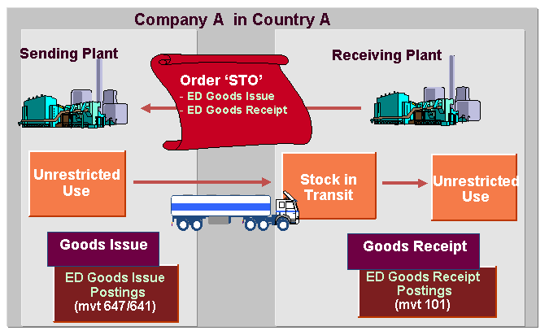
Service: jellemzően olyan törzsadatokkal rendelkező szolgáltatás, amelyet 5-ös számlaosztályra és költséghelyre könyvelünk. Szolgáltatás-vételi megrendeléseket belsőleg vagy külsőleg beszerzett szolgáltatásokhoz adunk meg. Ezek a vásárlási megrendelések eltérnek a szokásosaktól, mivel nincs szükség árubevételre és nincs készletük sem.
Kontírozási kategória. (Account Assignment). A tranzakcióknak alkalmasak többek-között (A) tárgyi eszközzel, (C) értékesítéssel (vevői megrendeléssel), (F) gyártási rendeléssel, (K) költséghellyel, (P) projekttel kapcsolatban létrehozni rendelési bizonylatokat és ennek megfelelően kontírozni a rendelést.

1 – Harmadik fél (Third-party) kódot használunk, amennyiben a vevői rendelést a szállítónak továbbítjuk és az szállítja le a rendelést a vevőnek.
C – Vevői megrendelés (Sales order) utáni gyártás, vagy a megrendelés utáni beszerzés esetén merül fel. A gyártás tekintetében az MRP folyamatok futtatását a vevői megrendeléssel szembeni veszik fel. A másik esetben a vevői megrendelés specifikus tételére adunk le megrendelést. Ebben az esetben szerepet játszhatnak a harmadik fél ügyletek.
K – Költséghelyet (Cost Center) adunk meg abban az esetben, ha az adott anyagot, vagy szolgáltatást azonnal felhasználjuk, ezért azonnali költségként jelentkezik. Ebben az esetben az 5-ös számlaosztály valamely releváns költségszámlájára kontírozunk, illetve kiválasztjuk az ehhez tartozó költséghelyet a 6-os számlaosztályból.
O – Gyártási rendelés (Order) a gyártás / értékesítés ütemezéssel, és az ehhez kapcsolódó anyagigény-tervező modullal (MRP) van kapcsolatban. Az anyagigény-tervezés fő funkciója az anyag rendelkezésre állásának garantálása, vagyis a szükséges mennyiségek időben, időre történő beszerzése. Ez a folyamat magában foglalja a készletek nyomon követését, és különösen a beszerzési és termelési beszerzési javaslatok automatikus elkészítését. Az anyagigény tervező modul kiszámítja, hogy mikor és milyen mennyiségre kell megrendelési javaslatot létrehozni. Az MRP-vezérlőnek a mennyiségek kiszámításához szüksége van minden információra a készletekről, valamint a dátumok kiszámításához az átfutási időkre és a beszerzési időkre is szüksége van. Az MRP vezérlő minden anyaghoz meghatároz egy megfelelő MRP-t és tételméret-eljárást a beszerzési javaslatok meghatározásához.
https://www.batchmaster.com/wp-content/uploads/MRP-MPS-process-diagram.jpg (2021. 02. 04.)
{kind=link}
P – Projekt (Project) esetében készülhetnek rendelések projektelemekre is. Ez projektszervezet esetében, illetve projekt és pályázati elszámolás esetén lehet kiemelten hasznos.

Q – Megrendelésre gyártás (Project make-to order) esetén a beszerzés is ennek függvényében módosul. Példa: az ipari gépek csúcstechnológiájú gyártói általában „megrendelésre gyártanak", a gépeket vagy megbízás alapján gyártják, vagy összeszerelik, és a megrendelést leadó ügyfél hajlandó megvárni a szállítását. Az MTO többnyire egyedi, projekt jellegű gyártás esetén figyelhető meg.
Részletesen lásd.: https://www.investopedia.com/terms/m/make-to-order.asp (2021. 02. 04.)
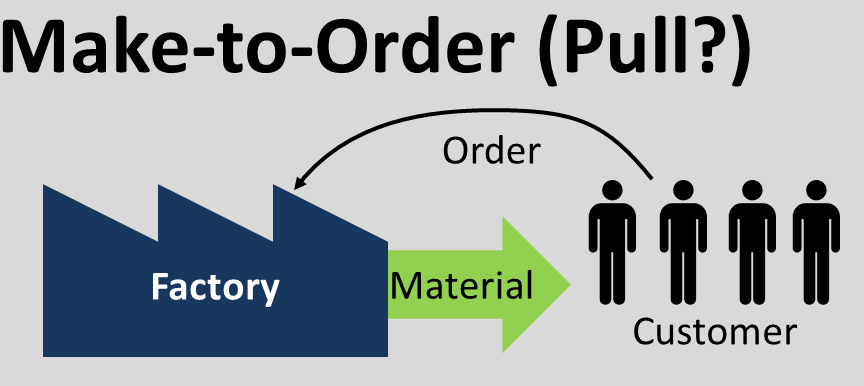
https://www.allaboutlean.com/push-pull/make-to-oder-stock/ (2021. 02. 04.)
A beszerzés tekintetében arról van szó, hogy a rendelések olyan termék gyártásához készülnek, amelyek nem tömeggyártásban, hanem egy-egy vevő igénye alapján készülnek el, egyedi specifikációkkal. (Vesd össze: „A megrendelésre gyártás olyan folyamat, amelynek során a terméket egyedileg gyártják egy adott vásárló számára. Ellentétben a meghatározatlan piacon történő tömegtermeléssel, ahol egy anyagot sokszor gyártanak, a megrendelésre gyártás során az anyag csak egyszer jön létre, bár ugyanaz vagy hasonló előállítási folyamat később is megismételhető." (https://www.erpgreat.com/production/difference-between-mto-and-mts.html (2022. 02. 04.)
Pécsen erre példa lehet a Körber Hungária Gépgyártó Kft. (Hauni) egyedi „vevői igényekre szabott" gépek és berendezések).
http://www.hauni.hu/hu/technologiak/szerelouezem/ (2021. 02. 04.)
1. Beszerzési igény (Purchase Requisition)
1.1. General Overview
A beszerzési igénylés moduláris felépítése és elhelyezkedése az SAP navigációs menüjében
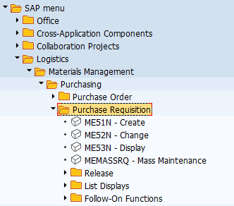
Beszerzési igénylés modul felépítése szerint a Logisztika \ Anyaggazdálkodás \ Beszerzés könyvtár főkönyvtárban lévő tranzakciókból és alkönyvtárakban elhelyezkedő tranzakciókból áll. A főkönyvtárban elérhető ME51-ennel egyedileg hozhatunk létre, az ME53N-nel egyedileg módosíthatunk, az ME53N-el egyedileg tekinthetünk meg igényléseket. Az MEMASSRQ-val tömegesen tudunk megtekinteni és szerkeszteni már elkészített igényléseket. A Release mappában az elkészült igényléseket hagyhatjuk jóvá egyedileg, vagy tömegesen. A List Displays-ban különböző lekérdezések és kimtatások érhetőek el, valamint listák generálhatóak, ahonnan szintén elérhetőek az egyes anyagigénylések megtekintésre és szerkesztésre. A Follow-On-Functions keretében további műveletek érhetők el, pl.: az igénylések megfelelő beállítás esetén megrendelésekké konvertálhatók.
A beszerzési igények fontosabb jelllemzőjük
Tárgyuk szerint a beszerzési igények elsősorban az anyag- és árukészletbe tartozó javakra, tovább számlázott szolgáltatásokra, tárgyi eszközökre, valamint azonnal felhasználású anyagokra és szolgáltatásokra adhatók le.
Létrehozásukat meghatározza, hogy a gyártási folyamatok részeként jönnek létre, vagy attól függetlenül. Amennyiben tervezett gyártási folyamatról van szó, úgy a gyártásvezérlés (Production Order), valamint az MRP folyamatok hozzák létre automatikusan. Ezzel szemben a gyártási folyamatokon kívüli, eseti eljárások keretében manuálisan létrehozhatunk beszerzési igényeket. Hasonló eset, amikor egyedi tárgyi eszközre adunk le igénylést. Egy másik lehetőség, ha a munkavállalók a napi munkavégzésükhöz szükséges eszközökre, anyagokra adnak le belső rendelési igényeket, pl.: katalógusok használatával.
Környezetük az igényléseket beszerzési, felhasználási, tárolási és számviteli környezetbe sorolható objektumok veszik körül.
Forrásuk szerint a beszerzési igénylések készülhetnek korábban létrehozott beszerzési igénylésekből, azonban a beszerzési rendelésektől eltérően szerződések, megállapodások, stb. nem alapozhatnak meg beszerzési igényeket.
Felhasználásuk szerint a beszerzési igénylésekkel megalapozhatók, alapadataival létrehozhatók beszerzési rendelések, árajánlatok, keretszerződések, ütemezései megállapodások.
Kapcsolódásuk szerint igénylésekhez kapcsolhatók szerződések, megállapodások, és beszerzési infó rekordok, valamint szállítók is.
Beszerzési igények elhelyezése a magyar standard számlatükörben és a mérlegben:
Megállapítható, hogy beszerzési igényeket elsősorban a forgóeszköz mérlegosztály készleteibe tartozó anyagokra és árukra adunk le a gyártási folyamat részeként. Az anyagok esetében a gyártáshoz szükséges alapanyagok, segédanyagok, üzemanyagok és fenntartási anyagokról lehet szó (többnyire), az áruk esetében a változatlan formában értékesíteni kívánt kereskedelmi áruk és a tovább számlázott szolgáltatások igénylése merülhet fel. A mérleg tekintetében, beszerzési igényléssel eszköz, különösen anyagtartalommal rendelkező tárgyi eszköz megrendelése is megalapozható. Befektetett pénzügyi eszközök és immateriális javak nem képezhetik az igénylések alapját. A mérleg mellett lehetőségünk van közvetlen költséget is elszámolni, és ezzel kapcsolatban anyagot, vagy szolgáltatást azonnal felhasználni, tehát az 5-ös eredményosztályra, illetve költséghelyre igényelni.
A fentiekkel kapcsolatban alapvető kérdés, hogy mit szeretnénk, milyen mennyiségben, és hova igényelni (rendelni), valamint milyen konstrukcióban, kitől (szerződések, megállapodások, megegyezések szerint), milyen környezetben, illetve mikorra igényelni.
Tranzakció típusa: SAP-ban ME51 és ME51N-el lehet létrehozni beszerzési igénylést. A különbség abban van, hogy amíg az ME51 egy több képernyős felépítésű, úgynevezett classic tranzakció, addig az ME51N az új típusú, egy / osztott képernyős Enjoy single screen tranzakciók osztályába tartozik. Gyakorlatilag a táblázat és a tételrészletező egy képernyő szerepel, amely jelentősen transzparensebbé teszi a képernyőfelépítést.
1.2. ME51N – Create (PR)
1.3.1. Áttekintés

1-es rész: Document Type (Bizonylat típusa)
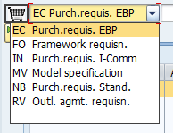
Az anyagigénylésünket egy bizonylat fogja tárolni, amely egy bizonylatrendszerben, bizonylatkörben helyezkedik el. Minden bizonylat mentés után egy egyedi számot fog kapni, amelynek segítségével transzparensen nyomonkövethetővé válnak. A bizonylat tulajdonságait pedig az őt leíró bizonylattípus beállításai fogják meghatározni. A legördülő menüben elérhető bizonylattípusok - kiválasztás esetén – meghatározzák egyrészt a bizonylat űtlaptáblázatának felépítését és szerkezetét (különösen az elérhető oszlopokat / mezőket), másrészt determinálják, hogy a bizonylat melyik számintervallumban fog elhelyezkedni. Ennek hátterében az áll, hogy SPRO-ban minden bizonylathoz tartozik egy előre definiált képernyőkép (Screen Layout), illetve egy bizonylatintervallum. A bizonylattípusok emellett meghatározhatják, hogy milyen típusú Account Assignment és Item Categoriek befogadására alkalmasak.
A PTE TTK-s IDES rendszerben az alapértelmezett az NB Standard PR.
2-es rész: Document Overview
A Document Overview ON-ra kattintva a képernyő baloldalán megjelenik egy hasáb. A hasábon lévő műveletek segítségével korábban elkészült, az anyagigénylés szempontjából releváns előzményeket tudunk látszólag betölteni. Eredményeim szerint azonban reálisan kizárólag korábbi beszerzés igénykés másolható át új anyagigénylésre. A funkció értelmét az a koncepció adja, amely szerint új beszerzési igényléshez felhasználhatóak korábban elkészített bizonylatokat is.
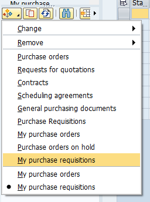
Purchase Order-ből, RFQ-ból, Conratcts-ból, Ütemezési megállapodásokból nem lehet átvenni adatokat új igénylésekhez (ez csak a Purchase Order esetében működik). Tehát csak a már korábban elkészített igénylés választható. Amennyiben nem a saját igényléseinket (My PR) választjuk, úgy egy összetett keresőfelület jön elő, amely érdemi segítséget jelent az egyes bizonylatok megtalásában. (Lásd videót)
1.3.2. Header

A Header-ben, tehát fejlécben tudunk megadni olyan információt, amely igénylésre, illetve az igénylés valamennyi / egyes tételeire vonatkozik. Az 1-es változatban folyamatos szöveget tudunk megadni, a 2-es változatban pedig sorokra bontott szöveget tudunk felvinni.
1.3.3. Tételnyilvántartó
Menüsáv ikonjainak szerepe:

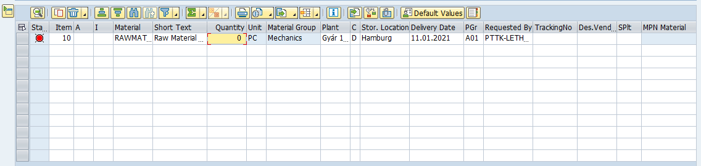
Alapadatok:
Material – anyag kódja I Short Text – anyag, rövid leírása I Quantity – mennyiség I Unit – mennyiség mértékegysége I Plant – üzem, ahová az anyagot igényeljük I Storage Location: az üzemhez tartozó raktárhely I Delivery date: szállítás naptári dátuma I Requested by: az igénylő neve, vagy kódja I Tracking No.: az igénylés nyomonkövetésének száma
Az anyagigénylést a következő objektumokkal lehet összekapcsolni: Purchase Group: Beszerzési csoport I Requested by: anyagigénylés kérelmezője I Tracking Number: tétel követési száma I Des. Vendor: javasolt szállító I Fixed Vendor: rögzített szállító I Purchase Org.: beszerzési szervezet I Agreement: szerződés I Item: a szerződés tételének sorszáma pl.: 10 I Info Record: beszerzési adatok.
Az Agreement-hez és az Info Record-hoz való hozzárendelés lényeges lehet, tekintettel arra, hogy az azokban foglalt kondíciók meghatározhatják az adott tétel tulajdonságait, pl.: árak és szállítási feltételek tekintetében. Később a Purchase Order (beszerzési megrendelés ezeket fogja átvenni).
Kitöltés sorrendje: először adjuk meg az anyag kódját, utána a Plant (üzemet). A kettő kombinációjából a program az anyagtörzs adataiból kitölti a többi mezők egy részét, szintén adjuk meg a Storage Location-t, majd a többi szükséges mezőt. Az itt megadott adatokat később átveheti többek között a Contract (szerződés nyilvántartó modul), valamint a Purchase Order (megrendelések).
1.3.4. Tételrészletező
Az 5-ös rész az egyes tételek részletezésre szolgál
Az egyes tételek részletes adatainak megtekintéséhez az Item drop down-ból válasszuk ki az adott tételt, majd azt követően nyissuk meg az egyes űrlapokat. Az űrlapok részben a táblázatban szereplő oszlop mezőket tartalmazzák csoportosítva, néhány esetben a táblázatban nem szereplő mezők és kapcsolók is rendelkezésre állnak.
Material Data

A Material Data űrlapon az anyag kódja, az anyag rövid neve, a sarzs (Batch), és az anyag csoportja szerepel. Ezek az adatok az anyagtörzsből töltödnek ki. A Vendor Material szabadszöveges mezőben a szállító nyilvántartásában szereplő anyagnevet és / kódot lehet megadni, ennek értelme abban az esetben van, ha a szállító adatbázisában más kóddal és névvel fut az anyag, mint a saját SAP rendszerünkben. (In most cases, the vendor uses a different number for the material than the one used in this system. The vendor's material number can therefore also be quoted in a purchase order for identification purposes. from: SAP help menü) A Batch esetében a sarzs menedzsmentről van szó, amelynek segítségével bizonyos szempontok szerint az egy kötegbe tartozó anyagok mozgása transzparensen nyomon követhető. (ehhez a részhez annyira nem értek, én az alábbi külső hivatkozásból indultam ki)
Mennyiség és dátumok (Quantity/Dates)
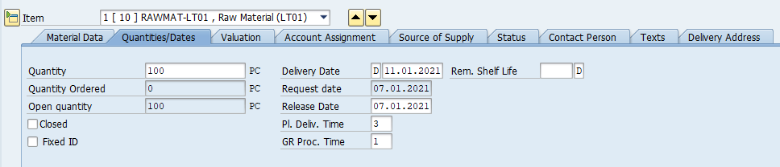
Az űrlapon három mennyiséget találunk. Az első az igénylendő mennyiséget, a második az ebből megrendelt mennyiséget, a harmadik a kettő különbözetét a nyitott mennyiséget tartalmazza. A Closed-el lehet lezárni az igénylést. A jobb oldali hasábban lehet megadni a tervezett szállítás időpontját, és az engedélyeztetés időpontját. A kérelem időpontja alapértelmezetten az a nap lesz, amikor az igénylést elkészítjük. Ezek alatt megadhatjuk a tervezett szállítás időt, illetve az áruérkeztetéshez szükséges időmennyiséget.
Értékelés (Valuation)
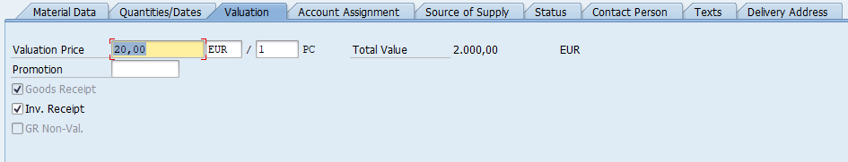
A Valuation űrlapon az anyagnak a mennyiségre / darabra vetített tervezett ára, pénzneme szerepel. Ennek értéke elsősorban az anyagtörzsből származhat. A Promotion alatt három kapcsoló szerepel. Az anyagérkeztetés (Good Receipt) aktiválásával azt jelezzük, hogy a tétel értékelése összefüggésben van a érkeztetéssel, a számlaérkeztetés (Invoice Receipt) estében, ha a számlaértkeztetéssel, a GR Non-Val. esetében, ha az olyan árut érkeztetünk, amelyet nem kell az ávételkor értékelnünk.
Kontírozás (Account Assignment)

A kontírozás űrlap felépítését a legördülő listában elérhető kategóriák határozzák meg. Ennek informatikai alapját az adja, hogy SPRO-ban az egyes kategóriákhoz egyedi beállítások (űrlapfelépítések, mezőkészletek) tartoznak. Alapesetben, ha nem választunk kontírozási kategóriát (tehát az AccAssCat üres) akkor az igénylés a áru- és anyagkészletre fog vonatkozni. A Fund, Functional Area, Fund Center, Grant elsősorban az állami költségvetésből működő intézmények forrásgazdálkodásának adminisztrációját teszik lehetővé. Segítségükkel pl.: megadható, hogy adott igénylést milyen alapra kontírozzuk, illetve milyen támogatást használunk fel. A Commitment Item a kötelezettségvállalási, pénzügyi tételnek felel meg.
K Cost Center (költséghely)
Költséghely kiválasztása elsősorban akkor indokolt, ha az anyagot, árut, vagy szolgáltatást közvetlenül költségként, pontosabban költségnemenként számoljuk el 5-ös számlaosztályban, és azonnal felhasználjuk. Az alapadatok tekintetében költséghelyet (Cost Center), a pénzügyi központot (Profit center), valamint az üzletágat (Business Area-t) adhatjuk meg. Az egyes objektumok összefüggésben állhatnak egymással a háttérbeállítástól függően, ezért pl.: a költséghely kitöltésével a pénzügyi központ és az üzletág is kitöltődhet automatikusan. Amennyiben költséghelyre adunk le beszerzési igényt, abban az esetben 5-ös számlaszámra fogjuk később könyvelni a beszerzésünket, egyúttal egy 6-os számvlteli költséghelyhez is hozzárendeljük azt. Az Unloading point mezőjében a kirakodás, illetve a felhasználás helyét tudjuk megadni, a mezőbe a költséghely fizikai elhelyezkedését célszerű megadni.
Amennyiben egy tételt több költséghely szerint szeretnénk felosztani, úgy válasszuk az első kockát, a többszörös konítrozás beállítását.
Amennyiben több költséghelyre szeretnénk kontírozni a beszerzendő tételt, úgy megosztás mezőben (Distribution) válasszuk ki a mennyiség, vagy a százalékos (arányos) formában való megosztást, és töltsük ki az alsó táblázatot.
Ha az első sort kitötöttük, utána a Reapet on (második ikonnal) tudjuk másolni a sort.
Projekt

Ha a beszerzési igénylést projekthez szeretnénk kapcsolni, úgy a P Project-et kell kiválasztani. A legtöbb mező azonos lesz a költséghely űrlapjával, ugyanakkor a WBS Element és a Network új elemként jelenik meg. A két mező kitöltése lehetővé teszi, hogy beszerzési igénylésünket a projekt megfelelő szintjével, elemével tudjuk összekapcsolni. Egy projekt alapszintű felépítését szemlélteti az alábbi ábra.

{kind=link}
https://help.sap.com/viewer/5ecdd9085d344e6693e65fc60c3b5b0f/6.17.19/en-US/26d4b65334e6b54ce10000000a174cb4.html (2021. január 20.)
Az ábrán szereplő projekt esetében az egyes szintekhez tudunk anyagigényléseket rögzíteni.
Befejezetlen beruházás / Tárgyi eszköz (Asset)
Amennyiben tárgyi eszközt szeretnénk beszerezni, úgy az Asset-et válasszuk ki. A szokásos kontírozásos mezők mellett az igénylésünket rátudjuk vezetni egy / több befejezetlen beruházásra, vagy közvetlenül a tárgyi eszközre.
A beszerzési igény információ forrása (Source of Supply)

Beszerzési igényekhez rendelhetünk különböző forrásdokumentumokat (keretszerződéseket, központi szerződéseket, vagy infó rekordokat). Ezek kiválasztásával alapesetben megjelenik az a rögzített szállító is, amelyet az adott dokuemtum tartalmaz. Emellett megadhatunk javasolt szállítót is. A keretszerződés, keretmegállapodás (amely jellemzően valamilyen Outline Agreement objektum) esetében meg kell adni, hogy az igénylés a szerződés melyik tételére vonatkozik, ellenkező esetben nem lesz összefüggés az igényelt tétel és a szerződés tétele között. Ez alól az információs rekord kivétel, ugyanis az mindig egy adott anyagra vonatkozik, szemben a szerződésekre, amelyek több tételt is tartalmazhatnak. Lényeges, hogy ezt csak abban az esetben tudjuk megtenni, ha azok (szerződések, infó rekordok) már elkészültek. Emellett szintén meg lehet adni a beszerzési szervezetet. A jelentősége ennek a Purchase Order létrehozása során lesz, a PO az igénylés adott tételéhez kapcsolt szerződésből fogja a kondíciók egy részét, pl.: az árat, a szállítási feltételeket kiolvasni.
Status (a beszerzési igénylés státusza)
A Status űrlapon a Process Status (feldolgozás státusza), a Block ID (az anyagigénylés blokkolása), és a Block text (a blokkolás szöveges indoklása adható meg).
Az aktív legördülő menüből az anyagigénylés állapota tekinthető meg. 03 = engedélyeztetés alatt, 05 = engedélyeztetés teljesítve, 08 = engedélyeztetés visszautasítva.
Contact Person

Created by: a felhasználó neve, aki készítette (ez a bejelentkezési adatokból származik)
Created Indicator: a létrehozás módjára utal

Amennyiben manuálisan hozzuk létre, úgy a Realtime (valós idejű, manuális létrehozás) lesz az alapértelmezett, B) esetben az anyagszükségletek tervezése hozza létre automatában, az F esetében a gyártás elrendelés hozza létre automatában.
1.3.5. Enviroment
Az Enviroment menüsorban lehet a tételhez kapcsolt rekordokat / objektumokat megtekinteni, illetve különböző kimutatásokat (pl.: készletek, szállítók értékeléseit) lekérni. A menüsor előnye, hogy külső tranzakciók nélkül is tudunk az adott tételhez tartozó objektumokat menedzselni.
Item Changes – Ez a tétel egyes elemeinek módosításait mutatja történeti megközelítésben (régi érték –> új érték) kronológiailag.

Material -> A tétel, illetve az adott anyag törzsadatait nyitja meg
Material Stock -> Az adott anyagból rendelkezésre álló mennyiséget és elhelyezkedését mutatja meg vállalat \ gyár \ tárolási hely szerint:

Vendor -> A szállító törzsadatainak egy részét (alapadatokat, beszerzési adatokat) mutatja

Vendor Evaluation -> A szállító automata értékelését nézhetjük meg:
Info Record -> A tételhez kapcsolódó Infó Rekordot nyitja meg

Contract – a tételhez kapcsolódó szerződést lehet megnézni / módosítani
Quota Arrangement -> A tételhez tartozó kvótamegállapodásokat lehet megtekinteni / módosítani

Az alábbi videó az egyedi és csoportos megjelenítés és módosítás lehetőségeit mutatja be.
szerződés
1. Keretszerződés (Outline Agreement)
SAP ERP rendszerben alapesetben mennyiség-, érték-, és ütemezési típusú keretszerződések, kivonatolt nyilvántartására van lehetőség bizonylatokon. A szerződés jellemzően közép- és hosszútávra jön létre a vállalat (beszerzési szervezete) és a szállító között. A szerződésben megállapodás történik a tételek, vagy a teljes szerződés célértékéről, a szállítási és fizetési feltételekről, valamint az áruérkeztetés szabályairól. A mennyiség és érték típusú szerződések tranzakciói a Contract mappában, az ütemezési megállapodások a Scheduling Agreement mappában találhatók. Lényeges, hogy nem a teljes szerződést, hanem annak a beszerzési folyamatokban felhasználható részeit rögzíthetjük, a kitölthető, illetve rendelkezésre álló mezőket meghatározza a szerződés rögzítésére szolgáló bizonylat háttérbeállítása.
A szerződések bizonylatairól áramlástani vonatkozásban a következőt érdemes tudni. Szerződés bizonylata (Contract) létrehozható beszerzési igénylésből és árajánlatból, a szerződés bizonylata alapján készíthető ütemezési megállapodás (Scheduling Agreement) és beszerzési rendelés (Purchase Order). Szerződési bizonylatot hozzá lehet rendelni a beszerzési igényléshez, azonban beszerzési igénylés közvetlenül nem készíthető szerződésből. Áramlástani szempontból lényeges, hogy a bizonylatszám mellett pontosan meg kell adni minden esetben a tétel sorszámát is (jellemzően 10, 20 stb. formátumban).
- ME31K Keretszerződés (Contract)1
Általános leírás: a mennyiségi és minőségi szerződések adminisztratív nyilvántartását különböztethetjük meg a Contract típusú tranzakción belül. A keretszerződések esetében a mennyiséget és / vagy a célértéket tudjuk megadni, azonban nem tudjuk a szállításokat ütemezni. Azonban a meglévő keretszerződésekre tudunk kötni szállításütemezési megállapodásokat (Scheduling Agreement).
Mennyiségi szerződéseket az üzleti partnerek jellemzően adott anyagok vagy áruk meghatározott célmennyesigére kötnek. A szerződésben szerződéses tételek szerepelnek, a célmennyiségeket és az értékeket is tételenként lehet megkülönböztetni. A szerződésben szereplő tételek nagyon specifikusan kapcsolódnak egyetlen anyaghoz, anyagszámhoz. Ebben az esetben lényeges, meghatározó a darabok és egységek száma. A célérték nem a szerződés fejlécében, hanem a tételek szintjén fog elhelyezkedni. A célérték tehát az adott szerződés tételének szintjén jelenik meg a célmennyiség és az adott anyag árának szorzataként, ebből jön létre az egyedi célérték.
Az alábbi saját példánkban a vállalatunk fehérje alapú táplálékkiegészítőt gyárt egészségügyi és sport célú felhasználáshoz. Az egyik alapanyagot a tejből készített, a sajtgyártás melléktermékének számító, majd finomított, szűrt (koncentrált, izolált) tejsavófehérje adja. Az alapanyagot USA-ban lévő tejgyárakból szerezzük be, a 2021. január és december 31 között időszakban két tejfeldolgozóval van szerződésünk.
Érték típusú szerződések esetében a tétel mennyisége másodlagos jelentősége, helyette a szerződés teljes értéke a meghatározó, ennek az alapja az, hogy nem vagy pontatlanul tudunk mennyiséget rendelni az egyes szerződéstételhez. Jellemzően azokban az esetekben használjuk, amikor nem ismerjük a pontos mennyiséget, de a teljes értéket igen. Gyakorlatilag egy olyan rendszeresen nyújtandó szolgáltatásra kötünk szerződést, amelynek mennyiségi lebontása nem megoldható. Ezekbe az esetekbe tartoznak a szolgáltatások, pl.: a létesítmény menedzsment jellegű szolgáltatás. A szerződés magában foglalja a tisztítást, karbantartást, javítást. Ebben az esetekben az egyedi mennyiségeket nehéz meghatározni, mérhetőségük korlátozott. Ezért egy általános érték-konstrukciók meghatározása relevánsabb. Érték típusú szerződés természetesen anyagra is vonatkozhat. Erre példa lehet az irodai anyagok (tollak, post-it jegyzettömbök), amelyek "tételenként" túlságosan "egyesek" ahhoz, hogy vázlatos megállapodásban rögzítsék azokat. Az érték típusú szerződésekben a különböző, nem számszerűsített tételek értékét szerződés fejlécében adják összeadni, amely kumulatív szerződésértékként fog szerepelni. Ebben az esetben az egyes tételenkénti mennyiségeknek és a célmennyiségnek alárendelt szerepe van.
A szerződés nyilvántartóban különböző típusú űrlapokon és bizonylaton adminisztráljuk a szerződéseket. Az űrlapok mezőkészletét a bizonylat háttérbeállítása határozza meg, gyakorlatilag előre elkészített képernyő felépítést (Field Selection), azaz mezőcsoportokat, mezőket tudunk az egyes űrlapokhoz rendelni a standard és a vállalatspecifikus készletből. Szintén beállíthatjuk, hogy az adott dokumentumtípus melyik számintervallumban helyezkedjen el.
1.1.1. Felhasználói tranzakció kezdőképernyője (Initial screen)
Vendor
Vállaszuk ki a szállítót, vagy írjuk be az azonosítóját.
Agreement type
A szerződés típusának megadásával determináljuk, hogy milyen mezők jelennek meg a további űrlapokon, milyen bizonylatintervallumban fog elhelyezkedni a szerződés, illetve, hogy a szerződés milyen tételkategóriákra vonatkozhat.
Organizational Data
A szerződést el kell helyezni a beszerzési szervezetben (szervezet, csoport).
Default Data for Items
A szerződés tételeinek alapértelmezett adatainak (Default Data for Items) kitöltésével megadhatjuk azokat az értékeket, amelyeket minden tételsor esetében használni kívánunk. Ennek akkor van értelme, ha a szállítóval kötött adott szerződés esetében minden tételre azonos jellemzők vonatkoznak (tétel kategóriája, kontírozás jellege, üzem, tárolási hely, anyagcsoport). Amennyiben kizárólag egy tételre vonatkozik a szerződés, akkor is megadhatjuk az értékeket (ebben az esetben a táblázatba nem kell felvinni az értékeket).
Reference to Preq
Szerződést létre tudunk hozni beszerzési igénylésekből is, az eljárás előnye, hogy a már felvitt adatokat nem szükséges újra megadni. Ebben az esetben a szállító mellett, beszerzési igénylés bizonylatszáma, a tétel sorszáma, valamint a beszerzési szervezet megadása kötelező, a többi adat megadása abban az esetben ajánlott, ha azokat a beszerzési igénylés tételsora nem tartalmazza.
1.1.2. Header
A Header-ben szereplő adatok a szerződés minden tételre érvényes, tehát ennek megfelelően célszerű felvinni az adatokat.
Adminisztrációs mezők (Administrative Fields)
Szerződés dátuma (Agreement Date): szerződés dátuma.
Tétel sorszámozás (Item Number Interval): a táblázat alapvető sorszámozása, ha az érték 10, akkor 10, 20, 30 lesz az alapértelmezett sorszámozás.
Tétel belső sorszámozása (Subterm Interv.): egy adott tétel résztételének a sorszámozása.
Érvényesség kezdete (Validoty Start): a szerződés érvényességének a kezdete
Érvényesség vége (Validity End): a szerződés érvényességének a lezárása
Nyelv (Language): alapértelmezett nyelv
Fizetési és szállítási feltételek (Terms of Delivery and Payment)
Fizetési feltételek (Payment Terms): a mező megadásával beállíthatjuk a fizetési időintervallumra bontott fizetési kedvezményeket (skontót).
Célérték (Target Value): a szerződésben foglalt összes érték.
Árfolyam és váltás (Exchange Rate): az árfolyam értékének megadása.
Nemzetközi Kereskedelmi Feltételek (International Commercial Terms): minden egyes nemzetközi számlán kötelezően szerepel.
(Lásd.: https://www.tnt.com/express/hu_hu/site/how-to/understand-incoterms.html (2021. január 28.)
1.1.4. Táblázat (Selection List)
A tételsorban a beszerzési igénylésben megadott adatokat találjuk (amennyiben megfelelő beszerzési igényt és tétel sorszámot adtunk meg a kezdő képernyőn). A hiányzó adatokat töltsük ki, vagy módosítsuk szükség esetén. A tételkategória és a kontírozási beállítások megegyeznek a beszerzési igénylés esetében leírtaknak.
1.1.5. Item detail
A tételrészletezőben kizárólag a táblázat adott tételére vonatkozó részletes adatok találhatók meg, tehát ennek a funkciója az adott tétel szabályozása. Az itt megadott adatok jelentőségét az adja, hogy más beszerzési tranzakciók, pl.: beszerzési rendelések azokat / azok egy részét alapértelmezettnek tekintve átveszik, tehát nem szükséges újra kitölteni, illetve csökkenthetjük a hibalehetőséget, elírásokat.
Belső fejlécben a szokásos, illetve a táblázatban megadott adatokat találjuk meg (anyag, anyag rövid leírása, tétel száma, anyagcsoport, telephely, tárolási hely, ár, stb.). Az igazán érdekes mező a RelOrdQty., amely szabályozza, hogy a szerződés alapján készülő beszerzési rendelés általában milyen mennyiségre vonatkozhat.
Egyéb adatok (Other Data) blokkban
Szállítókkal szemben megfogalmazott emlékeztetők, felszólítások (1st Rem./Exped. – 3rd Rem./Exped.) napokban kifejezve, arra az esetre, ha az üzleti partner nem szállítja le a a szerződés alapján összeállított és elküldött megrendelés szerinti árut.
Követési szám (Tracking No.) megadása lehetővé teszi a szerződésben foglalt tétel életútjának a követését, tehát pl.: hogy milyen bizonylatokon jelenik meg.
Szállítói anyagnév (Vendor Material) megadása transzparensebbé teszi a saját és a szállítói nyilvántartásban eltérő néven szereplő anyagok egyeztetését.
Megrendelés visszaigazolása (Order Acknowledgment Requirement) aktiválása esetén a szállítónak nyugtát kell küldeni a megrendelés elfogadásának visszaigazolásáról. Ebben az esetben a rendszer az adott tétellel kapcsolatban nyugtázási kérelmet küld a szállítónak. A mező összefüggésben áll megerősítést vezérlő kulccsal (ConfContr.).
Becsült ár (Estimated Price) mutató jelzi, hogy a nettó ár hozzávetőleges. Ezt abban esetben érdemes beállítani, ha a pontos árat nem ismerjük, aktiválás esetén a számlaellenőrzés során nagyobb az ár különbség tolerálásának mértéke, mint a pontos nettó ár esetén. Tehát ennek a jelentősége abban az esetben van, ha a megrendelésen más ár szerepel, mint a számlán.
Áru- és számlaérkeztetési mutatók (GR/IR Indicator) blokkban
Áruérkeztetés (Good Receipt) mutató aktiválásával a szerződés tételéhez engedélyezi és várja az árubevételezést. Ennek jelentősége elsősorban az anyag- és árukészletek esetében van. A mutató aktiválása esetén a tétel releváns a készletgazdálkodás szempontjából, érkeztetése, átvétele, bevételezése szükséges.
Számlaérkeztetés (Invoice Receipt Indicator) aktiválásával a szállítói számlát összekapcsolja a szerződésben szereplő tétellel. Ennek hátterében az áll, hogy a beszerzési folyamatok során szokásos esetben a szállító mindig ár ellenében szállítja le az anyagokat, árukat és szolgáltatásokat. Amennyiben az értékek felszámíthatók a rendelésen, akkor a számlán is hiánytalanul szerepelniük kell. Ebben az esetben a számla kapcsolódik a beszerzési rendelés tételéhez. Ha a számlaérkeztetés nincsen bekapcsolva, abban az esetben az árukat a szállító díjtalanul szállítja.
Áru-nyugta alapú számlaellenőrzés (GR-Based Invoice Verification) aktiválása esetén a rendelési tételhez a megrendelés tételéről számlát lehet bevinni az áruátvételkor bejegyzett áruátvételi bizonylat vagy szállítólevél számának hivatkozásával. A folyamat során külön számlanyomtatvány készül minden árubevételhez. Az ár és a számla formai pontosságának ellenőrzése a tétel szintjén történik.
Alulszállítási határérték (Underdelivery Tolerance Limit) az százalékos érték (a rendelési mennyiség alapján), ameddig a leszállított mennyiséget elfogadják. Pl.: a rendelési mennyiség 70%-a alatt nem veszem át a szállított mennyiséget, rész szállítást nem vételezek be.
Túlszállítási határérték (Overdelivery Tolerance Limit) az százalékos érték (a rendelési mennyiség alapján), ameddig a leszállított mennyiséget elfogadják. Pl.: a rendelési mennyiség 120%-a feletti árut mennyiséget nem veszem át.
Korlátlan (Indicator: Unlimited Overdelivery Allowed) eben az esetben bármilyen arányú túlszállítás elfogadható.
Adókulcs (Tax Code): a megrendelésen a megadott adókulcs fog szerepelni, illetve a beérkező szállítói számlán is.
Szállítási előírások (Shipping instruction) segítségével megadható, hogy a szállító mire figyeljen csomagolás és szállítás során.
Készlet típusa (Stock) meghatározza, hogy az anyagérkeztetést követően a tétel milyen irányba menjen tovább (pl.: szabadon felhasználható, minőség-ellenőrzés, stb.)
1.1.6. Menüsor
A menüsorból számos további lekérdezési lehetőség elérhető, ezek közül a szerződésekkel kapcsolatos áttekintés, a teljesítéseket és a változtatásokat mutatjuk be.
Az engedélyeztetési dokumentáció (Release Documentation) funkciója, hogy számszerű képet adjon a szerződés tételére vonatkozó beszerzési (megrendelési és beérkezési) adatokról.

A lekérdezés segítségével nyomon követhető, hogy milyen beszerzési rendelések, milyen dátummal készültek a szerződéssel összefüggésben tételre, dátumra, mennyiségre, és teljes árra vonatkozóan. Az alsó sárga háttérszínnel szedett összegzés a megrendelt mennyiség mellett tartalmazza a szerződésben szereplő célmennyiséget, valamint a nyitott mennyiséget is.
- Lekérdezés (List Displays)
A listaszerű lekérdezések esetében lehetőségünk van szállító szerint (ME3L), anyag szerint (ME3M), anyagcsoport szrint (ME3C), kontírozási adatok szerint (By Account Assignment), követési szám szerint (ME3B, MELB) és szerződésszám szerint (ME3N) listázni. A lekérdezések felépítése azonos, az első mező megnevezése változhat a lekérdezés típusa szerint. Az eltérést elsősorban az jelenti, hogy az eredményeket mindig a lekérdezés címében szereplő objektum szerint csoportosítja, illetve az alá rendeli bontásban. Az alábbiakban az ME3L-t mutatjuk be.
A szűrési lehetőségek megegyeznek a szerződések rögzítése során kitölthető mezőkkel, ezek részletesebb magyarázata nem indokolt. Gyakorlatilag bármely olyan mezőt megadhatunk tartományban, amelyet korábban a szerződés rögzítésének űrlapján kitöltöttünk. Ezek alapján tudjuk pontosítani, vagy csoportosítani a lekérdezéseket, tehát pl.: listázza ki azokat a szerződéseket, amelyek a Z52-es beszerzési csoporthoz, az 1000-es beszerzési szervezethez és a 8200000001-es szállítóhoz tartoznak. A Scope of List mező határozza meg az elkészült lista formátumát, célszerű valamilyen ALV értéket megadni, annak érdekében, hogy transzparens táblázatot kapjunk vissza eredményként.
A lekérdezésből látható, hogy szállító szerint csoportosítja a szerződéseket.
Amennyiben a Line Item-re kattintunk, úgy megnyitja a lekérdezés a rögzített szerződést. A diagram ikonra kattintva a szerződéshez kapcsolt beszerzési rendeléseket listázza ki.
A megjelenített mezőket lehet bővíteni, csökkenteni, rendezni a Change Layout funkcióval.